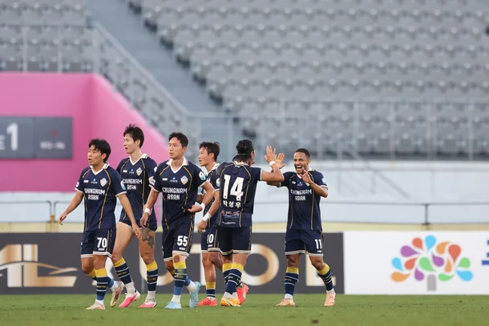
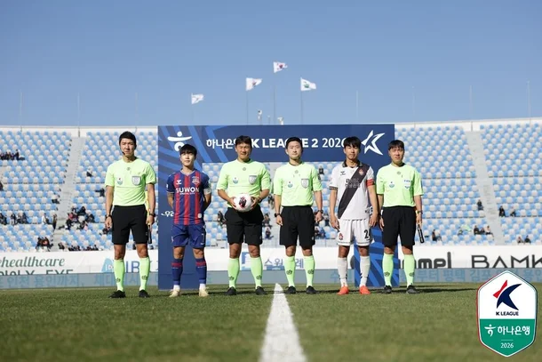
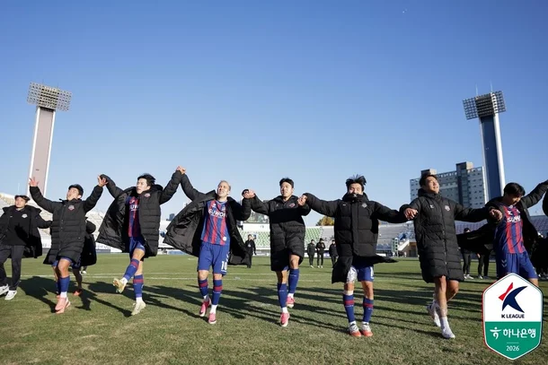
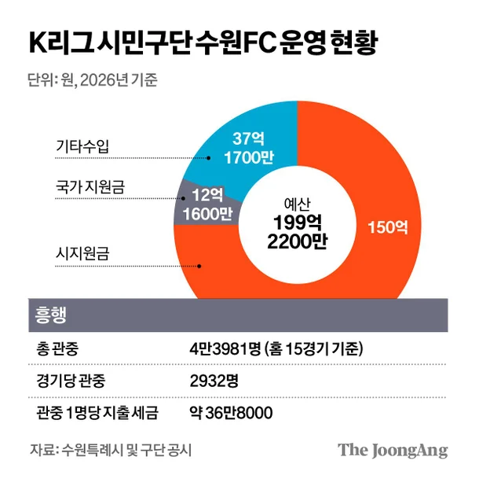

1511억 퍼붓고도 관중석 텅…'혈세 카르텔'에 갇힌 K리그 : 네이트 스포츠




관중이 구단을 먹여살리는 게 프로인데, 수원FC는 거꾸로 세금이 관중석을 떠받친다.
자체 수입은 37억원뿐이고, 그나마 일부는 시의 압력에 못 이긴 기업들이 내는 스폰서비다.
수원 시민 김예진씨는 “세계적인 축구 도시 맨체스터도 아닌데 프로팀이 두 개나 있어야 하느냐. 수원 시민은 (맨체스터시티 구단주인 중동 부호) 만수르가 아니다”고 꼬집었다.
수원FC만의 일이 아니다.
올해 K리그 1·2부 29개 구단 가운데 절반이 넘는 17개가 시·도민 구단이다.
올해 이들에게 들어간 지자체 보조금은 1511억원으로 지난해보다 253억원 늘었다.
1500억씩 앞으로 7년이 누적되면 1조원이 넘는 세금이 축구판에 쏟아진다.
태생부터 비정상이었다.
2002 한·일 월드컵 뒤 남은 대형 경기장을 활용해야 한다는 명분에 지자체장과 후보자들의 치적 욕심이 맞물려 시·도민 구단이 우후죽순 생겼다.
2002년 이후 창단한 프로구단 19개 중 17개가 시·도민 구단이다.
시장(市場) 원리가 작동해야 할 프로 무대를 시장(市長)이 좌우하는 ‘혈세 카르텔’이다.
돈이 모자라면 시의회에 읍소해 추가경정예산으로 메우는 일이 해마다 되풀이된다.
K리그 선수 출신인 임민혁씨는 “구단이 스스로 돈을 벌면 지자체 지원이 깎이니, 오히려 일을 안 해야 돈이 쉽게 내려오는 기형적 구조”라고 지적했다.
구단주 입맛에 맞춘 전문성 없는 낙하산 인사도 반복된다.
부실 운영 논란은 해마다 터진다.
김포FC 직원의 80억원대 공금 횡령 사건은 드러난 지 넉 달이 지났지만 아직도 감사를 끝내지 못했다.
파주FC는 창단 첫해부터 급여를 주지 못했다.
지난해엔 충남 아산이 임금을 체불했고, 광주FC는 연대기여금을 내지 않아 국제축구연맹(FIFA)으로부터 선수 등록 금지 징계를 받았다.
그 와중에 9개 시·도민 구단 대표들은 북중미 월드컵 기간 멕시코 휴양지 칸쿤으로 외유성 출장을 떠났다.
1인당 1600만원짜리 비즈니스석 항공권은 구단 예산으로 결제했다.
시·도민 구단이 지역 스포츠에 기여한 면도 있다.
그러나 돈줄을 쥔 구단주 눈치를 보며 당장 성적을 내야 하니 몸값 비싼 외국인 선수에게 기대는 이른바 ‘해줘 축구’로 흐른다.
인천 유나이티드 제르소와 무고사의 연봉을 합하면 30억원이 넘는다.
2부 대구FC 세징야의 연봉은 21억원으로, K리그 전체에서 가장 많다.
프로야구 삼성 라이온즈 팬 김석훈씨는 “구자욱이 낸 세금으로 세징야 연봉을 주는 거냐”고 성토했다.
잼버리 여수섬 보단 낫잖아 한잔해